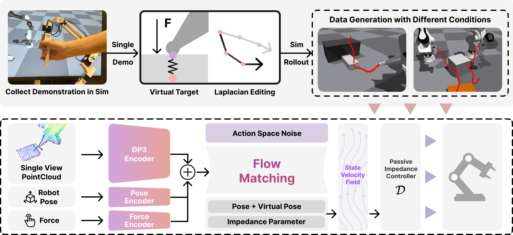

Learning 3D Compliant Flow Matching Policies
from Force & Demonstration-Guided Simulation Data
* Equal Contribution · University of Pennsylvania
Output
What We Built
This framework uses a lightweight scheme to generate force-informed training data entirely in simulation from a single human demo. With this data, we train point cloud + force attending policies with passive impedance outputs. At execution, our passive impedance controller ensures compliant, safe interactions. Together, these components enable robots to generalize from simple geometry in sim to unseen real-world objects and spatial configurations.
See It In Action
The Problem & Our Approach
While visuomotor policy has made advancements in recent years, contact-rich tasks still remain a challenge. Robotic manipulation tasks that require continuous contact demand explicit handling of compliance and force. However, most visuomotor policies ignore compliance, overlooking the importance of physical interaction with the real world, often leading to excessive contact forces or fragile behavior under uncertainty.
Introducing force information into vision-based imitation learning could help improve awareness of contacts. However, current visuomotor policy approaches require a lot of data to perform well. One remedy for data scarcity is to generate data in simulation, yet computationally taxing processes are required to generate data good enough not to suffer from the Sim2Real gap.
In this work, we introduce a framework for generating force-informed data in simulation, instantiated by a single human demonstration, and show how coupling with a compliant policy improves the performance of a visuomotor policy learned from synthetic data. We validate our approach on real-robot tasks, including non-prehensile block flipping and a bi-manual object moving, where the learned policy exhibits reliable contact maintenance and adaptation to novel conditions.
Framework Pipeline

We thank our anonymous reviewers, who provided thorough and fair feedback that improved the quality of our paper. This work was supported by the National Science Foundation (NSF) Foundational Research in Robotics (FRR) program under NSF CAREER Award Grant No. FRR-2443721.
BibTeX
@article{li2025flow,
title={Flow with the Force Field: Learning 3D Compliant Flow Matching Policies from Force and Demonstration-Guided Simulation Data},
author={Li, Tianyu and Li, Yihan and Zhang, Zizhe and Figueroa, Nadia},
journal={arXiv preprint arXiv:2510.02738},
year={2025}
}